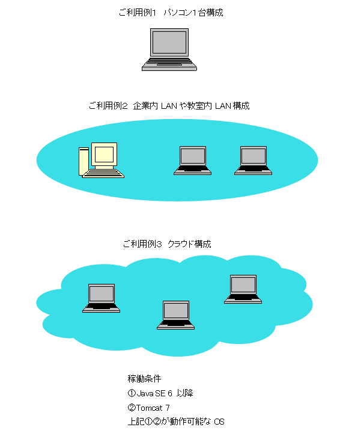

設問自由な軽量 Web アンケートシステム
「Let'sアンケート・小テスト」は、無料ソフトのWebアンケートシステムです。
ストレスチェック制度のアンケート調査や、学校で行う小テスト、各種アンケート用などに利用できます。
アンケート内容・設問は自由に作成できますので、用途を限定しません。
サンプルアンケートとして、厚労省ストレスチェック設問集を同梱しています。
本アンケートソフトウェアは、お客様自身のパソコンやサーバ、またはクラウドにインストールしてお使いください。
後述の「アンケートシステム利用例」をご覧ください。
回答者用のパソコンやタブレットに本ソフトウェア固有のソフトは必要ありません。
回答入力やアンケートの作成、結果参照などすべてブラウザが動作すれば実施できます。
ご自分で作成したアンケートや小テスト、ストレスチェック調査を公開し、回答・解答を回収できます。
回答・解答の内容や状況はいつでも管理者機能から参照できます。
回答・解答結果はダウンロードしてExcel等の表計算ソフトでも利用できます。
本ソフトウェアのダウンロードから利用開始までの手順は「操作説明書（PDF 1.8MB）」をご覧ください。
操作画面の例のページへ （回答者／解答者の場合、管理者の場合）
操作説明書（PDF 1.8MB）
ダウンロード（お客様の環境でご使用ください）
アンケートシステム利用例

画面例
画面例： 回答／解答者の最初の画面 (複数のアンケートを作成できます)

画面例： ストレスチェック簡易調査票の場合の回答画面

画面例： 学校の生徒通学手段アンケートの例
ラジオボタン (単一回答)、チェックボタン (複数回答)、文章式を使用して設問できます。

画面例： アンケート管理者用の画面
画面例： アンケート管理者用のログイン画面
※アンケート管理者用には簡易なログイン機能がありますが、回答者/解答者用はありません。
回答者/解答者のユーザ管理、ログイン管理が必要な場合は、カスタマイズ (有料) になります。

その他の画面例は、操作画面の例のページへ （回答者／解答者の場合、管理者の場合）をご覧ください。
利用例
ストレスチェック制度 ストレスチェック調査 自治体・役所 住民アンケート 企業・会社 社内アンケート、取引先アンケート、社内テスト 商店・店舗 お客さまアンケート、感想・意見・要望アンケート、調査アンケート 学校・教室・学級 小テスト、生活習慣アンケート、進路アンケート 病院・医院 初診時記入票、外来アンケート、,給食アンケート など様々なシーンでご利用いただけます。回答者/解答者用の機器
クライアント機器は、パソコン、スマートフォン (スマホ)、タブレットなどWEBブラウザが使用できる機器。サーバー用の機器
クラウド、サーバー、パソコンなどJava環境が使用できる構成。サポート
本ソフトウェアに関する無料サポート、保証はありません。インストールや操作に関する説明書は同梱されています。
パソコン1台構成時のインストールに関してのみフォームからお問合せ頂けます[無料]
有料サポート
・初期状態の組込データベースを、PostgreSQLなどのデータベース管理ソフトに変更する。・ユーザ管理機能追加。
などのカスタマイズを承ります。
お問合せ
詳しくはお問合せください。お問合せフォームご使用前に
ソフトウェア使用許諾契約書をご確認ください。ソフトウェア使用許諾契約書（PDF 134KB）
ホームページへ戻る
2015.5.25 3.0公開
2012.11.24 2.0公開
2012.9.24 1.0公開
Copyright 2001-2023, All Rights Reserved